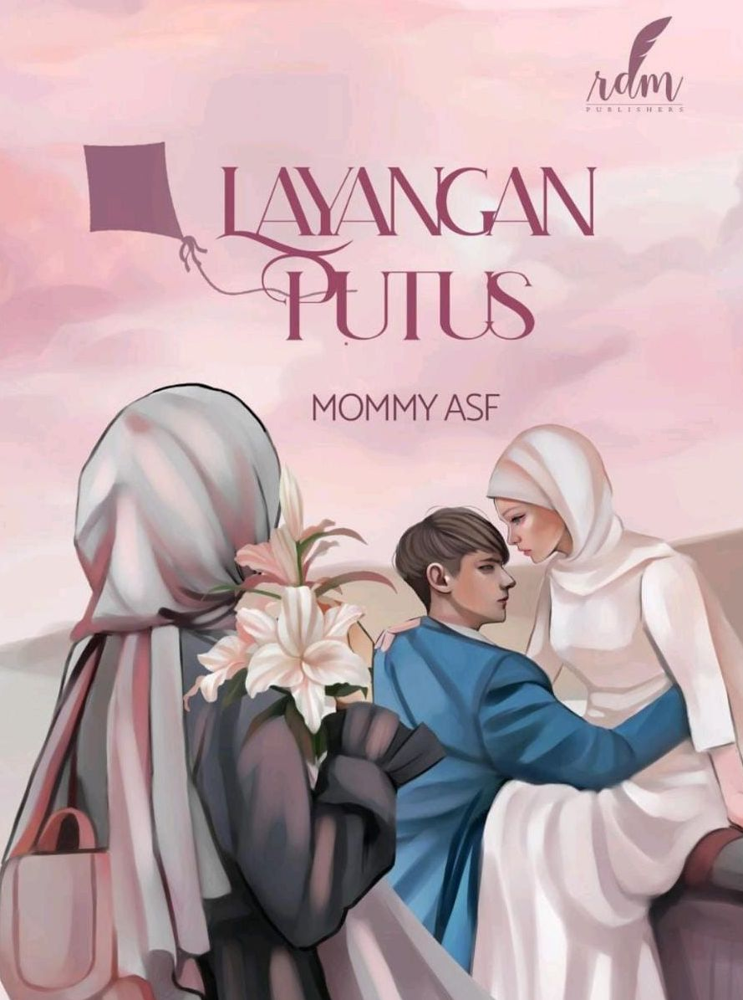

| Home | Best Seller |
|  | Judul : Layangan Putus Penulis : Mommy ASF Tahun : 2020 Jumlah Halaman : 268 halaman Penerbit : RDM Publisher Harga : Rp75.000 |
Sinopsis Novel Layangan Putus |
| Seorang gadis remaja lugu dan polos yang berasal dari daerah, tumbuh, berkembang, dan menemukan cinta di kota besar yang sangat berbeda
dengan iklim daerah asalnya. Gadis remaja ini hanya memiliki mimpi sederhana, yaitu menyambung pendidikan dan menyelesaikannya tepat waktu. Namun, semua itu berubah ketika ia bertemu dengan seorang pria tangguh. Lelaki yang mandiri dan berpendirian keras itu mengenalkannya dengan dunia baru yang belum pernah ia temui di daerah asalnya. Laki-laki bernama Aris itu membuat Kinan jatuh cinta karena sosoknya yang menyenangkan, gigih, dan mampu mengubah cara pandangnya kepada dunia. Hingga akhirnya Mereka berdua menyamakan visi dan berjanji dalam ikatan pernikahan. mereka memulai semua kehidupan dari awal, Kinan dengan setia mendampingi Aris membangun mimpi mereka. Perubahan pola pikir Aris kembali mengubah cara pandang Kinan terhadap prioritas kehidupan. Kinan tetap setia di sisi Aris dan melupakan mimpinya menjadi seorang wanita karier serta memilih merawat keluarga di rumah sesuai permintaan Aris, sambil kembali mengenal Tuhan. Aris mampu meyakinkan Kinan bahwa cukup Aris saja yang bekerja di luar rumah dan itu sudah cukup membawa Kinan memenuhi mimpinya saat kecil bertualang menaiki balon udara. Kinan jatuh cinta akan keindahan Cappadocia dan balon udara yang menghiasi angkasa. Kinan mempunyai mimpi pergi ke Capadocia, Turki. Namun takdir berkata lain saat Kinan menemukan foto-foto di ponsel suaminya. Di mana Kinan melihat dan menikmati keindahan Capadocia, tapi dari foto sang suami bersama wanita lain. Dunia seperti runtuh, orang yang paling Kinan percayai, ternyata telah tega berbohong dan menyakitinya selama ini. Dua belas hari menghilang, Aris kembali ke rumah dengan semua hal baru yang tak pernah Kinan duga. Kehidupan rumah tangganya pun akhirnya tidak selamanya bisa bahagia, namun Kinan tetap berusaha dan bekerja keras agar mampu menghidupi anak-anaknya dalam menggapai setiap impian. |